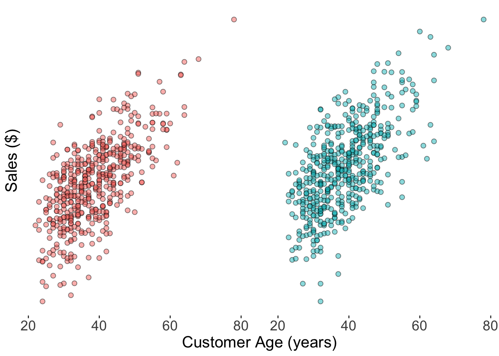
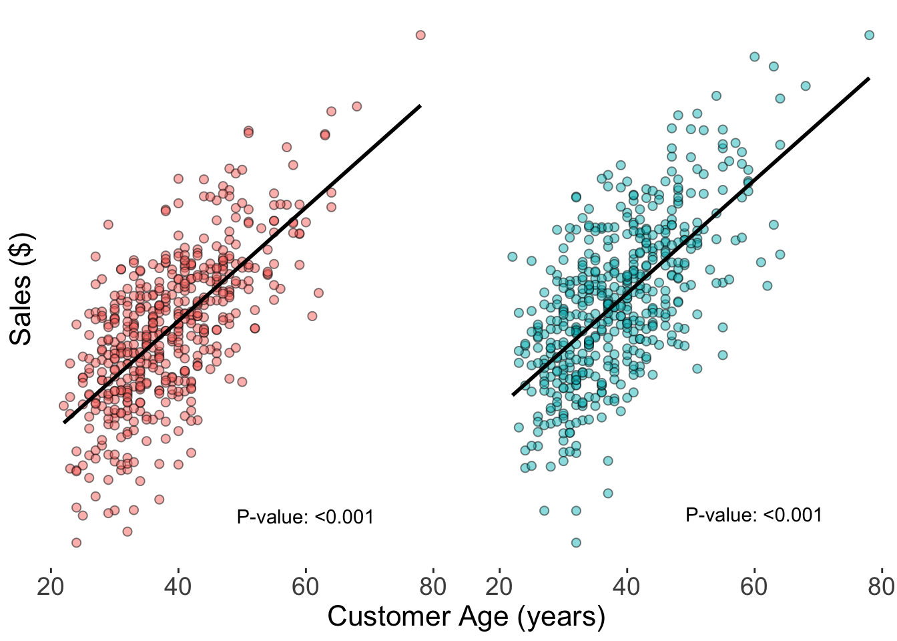
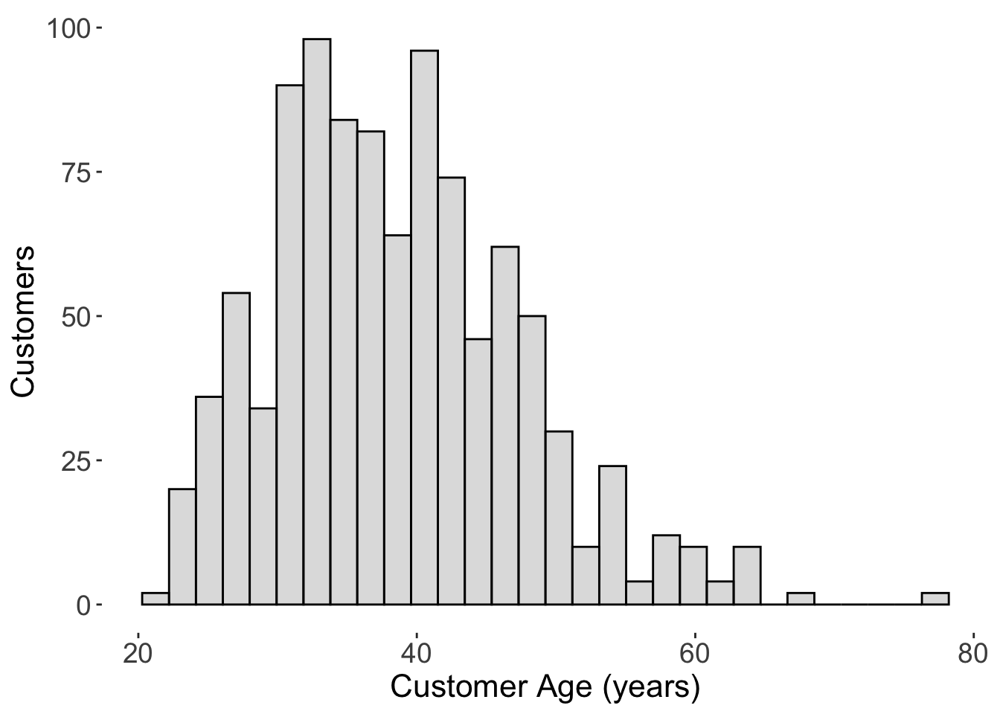

When we see the phrase statistically significant, we’re often meant to believe it means that the result matters, but that is not the case. Here is a simple example why.
Context: Suppose we are trying to hone in on a market segment that yields higher sales so that we can develop better strategies for acquiring customers in that group.
We decide to correlate the customer age with the sales amount. Suppose there are two scenarios from a sample of 500 customers:
Code
# Load packageslibrary(tidyverse)## Simulate some data# Set the seed for reproducibilityset.seed(123456789)# Sample sizen <-500# Create the data setsim_dat <-tibble(Age =round(18+rgamma(n = n, shape =5, scale =4)),Sales_Large =500+10* (Age -mean(Age)) +rnorm(n = n, sd =100),Sales_Small =500+ .10* (Age -mean(Age)) +rnorm(n = n, sd =1) ) |># Send down the rowspivot_longer(cols =starts_with("Sales"),names_to ="Effect",values_to ="Sales",names_prefix ="Sales_" ) sim_dat |># Make a paneled scatterplotggplot() +geom_point(aes(x = Age,y = Sales,fill = Effect ),shape =21,color ="black",alpha = .5,size =2 ) +facet_wrap(~Effect, scales ="free_y") +theme(panel.background =element_blank(),legend.position ="none",strip.text =element_blank(),axis.text.y =element_blank(),axis.ticks.y =element_blank(),axis.text =element_text(size =14),axis.title =element_text(size =16),panel.spacing.x =unit(2, "lines") ) +xlab("Customer Age (years)") +ylab("Sales ($)")

At a glance these graphs look very similar, such that age is positively correlated with the sales amount. We fit a linear regression model, or “best-fit line”, to summarize and describe the relationship.
Code
# Fit the modelssim_models <- sim_dat |># Nest the datanest(.by = Effect) |># Fit a linear model for each data set; get p-valuesmutate(# Fit the modelmodel = data |>map( \(.dat) lm(formula = Sales ~ Age,data = .dat ) ),# Compute the p-valuepvalue = model |>map( \(.model) 2*pt(q = .model$coefficients /sqrt(diag(vcov(.model))), df = .model$df.residual, lower.tail =FALSE )[[2]] ) )sim_dat |># Make a paneled scatterplotggplot() +geom_point(aes(x = Age,y = Sales,fill = Effect ),shape =21,color ="black",alpha = .5,size =2 ) +geom_smooth(aes(x = Age,y = Sales ),formula = y~x,method ="lm",color ="black",se =FALSE ) +geom_text(data = sim_models |># Extract the p-valueunnest(cols = pvalue) |># Clean up p-valuemutate(pvalue =case_when( pvalue <0.001~"<0.001",TRUE~as.character(round(pvalue, 3)) ) ),aes(x =60,y =c(160, 496.5),label =paste0("P-value: ", pvalue) ) ) +facet_wrap(~Effect, scales ="free_y") +theme(panel.background =element_blank(),legend.position ="none",strip.text =element_blank(),axis.text.y =element_blank(),axis.ticks.y =element_blank(),axis.text =element_text(size =14),axis.title =element_text(size =16),panel.spacing.x =unit(2, "lines") ) +xlab("Customer Age (years)") +ylab("Sales ($)")

The p-values for both of these models are extremely, and equally, small (<0.1%), indicating statistical significance. In fact, the evidence is so strong that some might say it is very significant–much smaller than the standard (and infamous) rule of thumb threshold of 5%.
It is based on this information alone that often would elicit the conclusion/statement/finding that age is significantly associated with sales.
You hear this language all the time, especially in research. It brings with it certain implications of importance, as if it has now become a meaningful fact that should warrant attention and/or action.
The problem?
Watch what happens when we add the actual scales for sales to these graphs (if you’ve noticed, they’ve been missing this whole time):
On the left panel, the range of sales goes from approximately $200 to $1000 per customer in an increasing fashion with age. On the right panel, it goes from about $497 to $503–a few dollars. See the issue yet? To solidify this, let’s look at the graphs when they are on the same scale:
It turns out that although these two graphs have the same amount of statistical significance, they clearly tell much different stories about how age relates to sales. The lines can be summarized as follows:
Left panel: The average sales increases by $104.55 on average for every 10 year increase in customer age.
Right panel: The average sales increases by $0.94 on average for every 10 year increase in customer age.
In the context of performing market segmentation for increased revenue (or whatever else it may be), these magnitudes certainly matter. Statistically, they don’t.
Some takeaways
Statistical significance only pertains to the existence of a relationship (under the implied assumptions), not the size of it.
You must pay attention to the magnitude of the relationship to gain any meaningful insight.
The magnitudes should be translated to the real-world implications of using the information for different decisions or courses of action. In the example above, the market age distribution looks like this:
Code
sim_dat |># Make a paneled scatterplotggplot() +geom_histogram(aes(x = Age ),fill ="gray",color ="black",alpha = .5 ) +theme(panel.background =element_blank(),legend.position ="none",strip.text =element_blank(),axis.text =element_text(size =14),axis.title =element_text(size =16) ) +xlab("Customer Age (years)") +ylab("Customers")

Although older customers yield higher sales, it may cost more marketing dollars to acquire any given individual from such a small segment, ultimately making the juice not worth the squeeze. Feeding estimates into cost-benefit or what-if scenarios can greatly increase confidence in how a proposed course of action would actually play out, instead of implementing things on the basis of mere existence (i.e., statistical significance).
Source Code
---title: "A simple example why statistical significance is insufficient for action"description: 'It ignores the basic question: "How much?"'author: "Alex Zajichek"date: "6/19/2024"image: "feature.png"draft: falsecategories: - Statistical Significance - Decision Makingformat: html: code-fold: true code-tools: true---{{< video https://www.youtube.com/embed/IWWONFhgVY4 >}}When we see the phrase *statistically significant*, we're often meant to believe it means that the result matters, but that is not the case. Here is a simple example why.> [Context]{style="text-decoration: underline;"}: *Suppose we are trying to hone in on a market segment that yields higher sales so that we can develop better strategies for acquiring customers in that group.*We decide to correlate the customer age with the sales amount. Suppose there are two scenarios from a sample of 500 customers:```{r, warning=FALSE, message=FALSE}# Load packageslibrary(tidyverse)## Simulate some data# Set the seed for reproducibilityset.seed(123456789)# Sample sizen <-500# Create the data setsim_dat <-tibble(Age =round(18+rgamma(n = n, shape =5, scale =4)),Sales_Large =500+10* (Age -mean(Age)) +rnorm(n = n, sd =100),Sales_Small =500+ .10* (Age -mean(Age)) +rnorm(n = n, sd =1) ) |># Send down the rowspivot_longer(cols =starts_with("Sales"),names_to ="Effect",values_to ="Sales",names_prefix ="Sales_" ) sim_dat |># Make a paneled scatterplotggplot() +geom_point(aes(x = Age,y = Sales,fill = Effect ),shape =21,color ="black",alpha = .5,size =2 ) +facet_wrap(~Effect, scales ="free_y") +theme(panel.background =element_blank(),legend.position ="none",strip.text =element_blank(),axis.text.y =element_blank(),axis.ticks.y =element_blank(),axis.text =element_text(size =14),axis.title =element_text(size =16),panel.spacing.x =unit(2, "lines") ) +xlab("Customer Age (years)") +ylab("Sales ($)")```At a glance these graphs look very similar, such that age is positively correlated with the sales amount. We fit a [linear regression](https://en.wikipedia.org/wiki/Linear_regression) model, or "best-fit line", to summarize and describe the relationship.```{r}# Fit the modelssim_models <- sim_dat |># Nest the datanest(.by = Effect) |># Fit a linear model for each data set; get p-valuesmutate(# Fit the modelmodel = data |>map( \(.dat) lm(formula = Sales ~ Age,data = .dat ) ),# Compute the p-valuepvalue = model |>map( \(.model) 2*pt(q = .model$coefficients /sqrt(diag(vcov(.model))), df = .model$df.residual, lower.tail =FALSE )[[2]] ) )sim_dat |># Make a paneled scatterplotggplot() +geom_point(aes(x = Age,y = Sales,fill = Effect ),shape =21,color ="black",alpha = .5,size =2 ) +geom_smooth(aes(x = Age,y = Sales ),formula = y~x,method ="lm",color ="black",se =FALSE ) +geom_text(data = sim_models |># Extract the p-valueunnest(cols = pvalue) |># Clean up p-valuemutate(pvalue =case_when( pvalue <0.001~"<0.001",TRUE~as.character(round(pvalue, 3)) ) ),aes(x =60,y =c(160, 496.5),label =paste0("P-value: ", pvalue) ) ) +facet_wrap(~Effect, scales ="free_y") +theme(panel.background =element_blank(),legend.position ="none",strip.text =element_blank(),axis.text.y =element_blank(),axis.ticks.y =element_blank(),axis.text =element_text(size =14),axis.title =element_text(size =16),panel.spacing.x =unit(2, "lines") ) +xlab("Customer Age (years)") +ylab("Sales ($)")```The [*p-values*]() for both of these models are extremely, and *equally*, small (\<0.1%), indicating [statistical significance](). In fact, the evidence is so strong that some might say it is *very* significant--much smaller than the standard (and [infamous]()) rule of thumb threshold of 5%.**It is based on this information alone that often would elicit the conclusion/statement/finding that *age is significantly associated with sales***.You hear this language all the time, especially in research. It brings with it certain implications of importance, as if it has now become a meaningful fact that should warrant attention and/or action.The problem?Watch what happens when we add the actual scales for sales to these graphs (if you've noticed, they've been missing this whole time):```{r}sim_dat |># Make a paneled scatterplotggplot() +geom_point(aes(x = Age,y = Sales,fill = Effect ),shape =21,color ="black",alpha = .5,size =2 ) +geom_smooth(aes(x = Age,y = Sales ),formula = y~x,method ="lm",color ="black",se =FALSE ) +geom_text(data = sim_models |># Extract the p-valueunnest(cols = pvalue) |># Clean up p-valuemutate(pvalue =case_when( pvalue <0.001~"<0.001",TRUE~as.character(round(pvalue, 3)) ) ),aes(x =60,y =c(160, 496.5),label =paste0("P-value: ", pvalue) ) ) +facet_wrap(~Effect, scales ="free_y") +theme(panel.background =element_blank(),legend.position ="none",strip.text =element_blank(),axis.text =element_text(size =14),axis.title =element_text(size =16),panel.spacing.x =unit(2, "lines") ) +xlab("Customer Age (years)") +scale_y_continuous(name ="Sales ($)",labels = \(x) scales::dollar(x, accuracy =1) )```On the left panel, the range of sales goes from approximately \$200 to \$1000 per customer in an increasing fashion with age. On the right panel, it goes from about \$497 to \$503--a few dollars. See the issue yet? To solidify this, let's look at the graphs when they are on the *same* scale:```{r}sim_dat |># Make a paneled scatterplotggplot() +geom_point(aes(x = Age,y = Sales,fill = Effect ),shape =21,color ="black",alpha = .5,size =2 ) +geom_smooth(aes(x = Age,y = Sales ),formula = y~x,method ="lm",color ="black",se =FALSE ) +geom_text(data = sim_models |># Extract the p-valueunnest(cols = pvalue) |># Clean up p-valuemutate(pvalue =case_when( pvalue <0.001~"<0.001",TRUE~as.character(round(pvalue, 3)) ) ),aes(x =60,y =160,label =paste0("P-value: ", pvalue) ) ) +facet_wrap(~Effect) +theme(panel.background =element_blank(),legend.position ="none",strip.text =element_blank(),axis.text =element_text(size =14),axis.title =element_text(size =16),panel.spacing.x =unit(2, "lines") ) +xlab("Customer Age (years)") +scale_y_continuous(name ="Sales ($)",labels = \(x) scales::dollar(x, accuracy =1) )```The line in the right panel is basically flat.It turns out that although these two graphs have the **same** amount of *statistical* significance, they clearly tell much different stories about how age relates to sales. The lines can be summarized as follows:- [Left panel]{style="text-decoration: underline;"}: The average sales increases by `r paste0("$", round(sim_models$model[[1]]$coefficients[["Age"]] * 10, 2))` on average for every 10 year increase in customer age.- [Right panel]{style="text-decoration: underline;"}: The average sales increases by `r paste0("$", round(sim_models$model[[2]]$coefficients[["Age"]] * 10, 2))` on average for every 10 year increase in customer age.In the context of performing market segmentation for increased revenue (or whatever else it may be), these magnitudes certainly matter. Statistically, they don't.## Some takeaways1. Statistical significance only pertains to the *existence* of a relationship (under the implied assumptions), not the size of it.2. You must pay attention to the *magnitude* of the relationship to gain any meaningful insight.3. The magnitudes should be translated to the *real-world* implications of using the information for different decisions or courses of action. In the example above, the market age distribution looks like this:```{r, warning=FALSE, message=FALSE}sim_dat |># Make a paneled scatterplotggplot() +geom_histogram(aes(x = Age ),fill ="gray",color ="black",alpha = .5 ) +theme(panel.background =element_blank(),legend.position ="none",strip.text =element_blank(),axis.text =element_text(size =14),axis.title =element_text(size =16) ) +xlab("Customer Age (years)") +ylab("Customers")```Although older customers yield higher sales, it may cost more marketing dollars to acquire any given individual from such a small segment, ultimately making the juice not worth the squeeze. Feeding estimates into cost-benefit or what-if scenarios can greatly increase confidence in how a proposed course of action would actually play out, instead of implementing things on the basis of mere existence (i.e., statistical significance).{{< bluesky-comments uri="at://did:plc:sh3av73hihgu72vx7k44kgv7/app.bsky.feed.post/3lc73zfajos2t" >}}